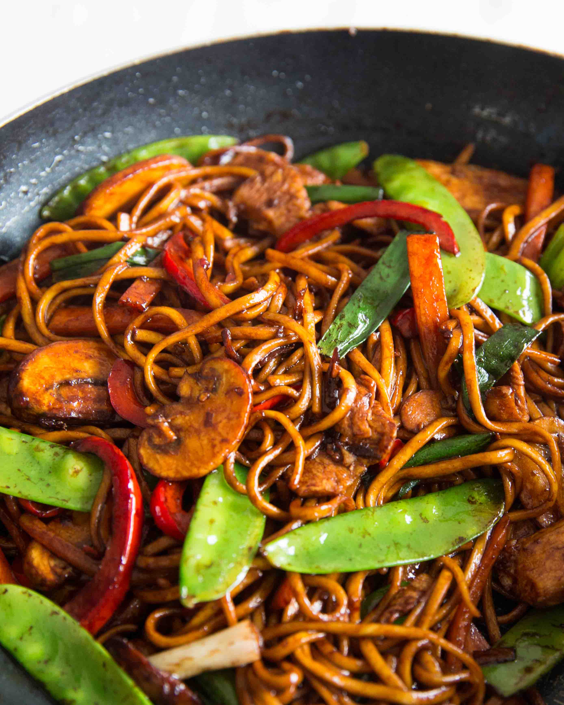

Chicken Noodle Recipe


Ingridients
- 1 large carrot, finely sliced or shredded
- 2 cups shredded green cabbage
- 1 red bell pepper, thinly sliced
- 2 jalapeno pepper, seeded and minced
- ½ cup chopped green onions
- 3 cloves garlic, finely crushed
How to Make It
- Step 1: Place carrots, cabbage, bell pepper, jalapeno pepper, green onions, and garlic in a mixing bowl
- Step 2: Mix chicken broth, rice vinegar, hoisin sauce, soy sauce, ketchup, brown sugar, sriracha sauce, and red pepper flakes together in a separate mixing bowl.
- Step 3: Place dry rice noodles in a large mixing bowl. Cover with about 6 cups boiling water; add a pinch of salt. Stir from time to time until noodles are soft, about 10 minutes. Drain; cool with cold water. Drain thoroughly. Transfer to a mixing bowl. Add shredded chicken; drizzle with sesame oil. Toss to coat.
- Step 4: Heat large skillet over high heat; drizzle in vegetable oil. When oil is hot (almost but not quite smoking), add the vegetable mixture. Cook and stir until vegetables are hot and steamy, 1 or 2 minutes.

Find out more: See the links below for more info.